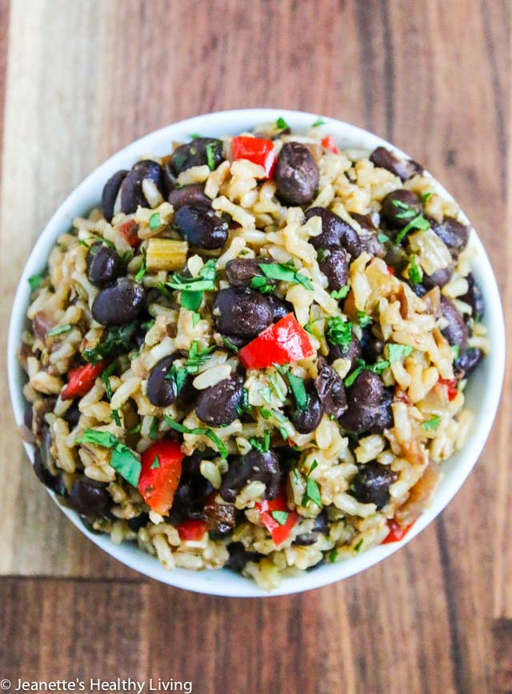

Welcome
Hi! I'm Katie - welcome! Step into my life, where you'll find allergy-friendly lifestyle tips and recipes.
Read More


Lunch Options:
Costa Rican Rice and Beans

Ingredients
- 3 tablespoons olive oil
- 1 stalk celery finely chopped
- 1 medium onion finely chopped
- 1/2 red bell pepper finely chopped
- 3 cloves garlic minced
- 2 cups long grain brown rice rinsed 3-4 times, drained
- 3 1/2 cups water
- 1 1/2 teaspoon sea salt
- 1/2 pound dried black beans
- 1 stalk celery
- 1 clove garlic
- 1 medium onion finely chopped
- 1 red bell pepper finely chopped
- 1/2 cup cilantro finely chopped
- 1/2 teaspoon dried oregano
- 1 tablespoon organic butter
- 1 teaspoon red bell pepper finely chopped
- 2 tablespoons onion finely chopped
- 2 tablespoons cilantro minced
- 1 clove garlic minced
- 1 tablespoon Worcestershire sauce
- 1/2 teaspoon ground cumin
Instructions
- Heat oil in a medium saucepan. Add celery, onion and bell pepper and saute until vegetables start to soften. Add garlic and cook for a minute. Add rice and cook until well coated and rice starts to turn opaque. Transfer to a rice cooker, add water and salt, and cook on brown rice setting. Alternatively, cook on the stovetop.
- Place beans in a large bowl and cover with 2 inches of water; let soak overnight. Drain beans and place in a pressure cooker, along with celery, garlic, onion, bell pepper, cilantro and oregano. Add water to cover ingredients with about 4 inches of water. Cook 14 minutes on high pressure (follow the instructions for your specific pressure cooker).
- Melt butter in a large saucepan over medium heat. Add red bell pepper, onion, cilantro and garlic and saute until vegetables begin to soften. Add 2 cups, cooked, drained black beans (recipe above), Worcestershire sauce, and cumin. Stir and simmer for about 2 minutes. Mix in 2 cups cooked rice (recipe above), toss gently and cook for another 2-3 minutes.
Slow Cooker Turkey Bean Chili

Ingredients
- 1 tablespoon olive oil
- 8 ounces mushrooms finely chopped
- 2 medium onions chopped
- 6 cloves garlic minced
- 1 pound ground turkey
- 1 tablespoon dried oregano
- 1 tablespoon ground toasted cumin
- 2 tablespoons chili powder
- 1 tablespoon ancho chili powder
- 1 teaspoon chipotle chili powder
- 7 cups cooked black beans or red beans 1 pound dried beans, cooked
- 28 ounces can whole tomatoes chopped up in food processor
- salt and pepper to taste
- 1 cup bean cooking liquid or low-sodium chicken broth
Instructions
- Heat olive oil in a large stock pot over medium heat. Add mushrooms and onions and cook until onions are translucent, about 5 minutes. Add garlic and cook another minute. Add ground turkey and cook until browned and cooked through. Add oregano, cumin, chili powder, ancho chili powder, and chipotle chili powder. Stir well and cook until fragrant, about a minute. Add black beans, tomatoes, bean cooking liquid, and salt and pepper to taste.
- Pour chili into a crockpot and cook on low 6 hours to develop flavors. Alternatively, continue cooking chili on the stovetop on low heat for 1 hour.
- Serve with variety of garnishes on the side.